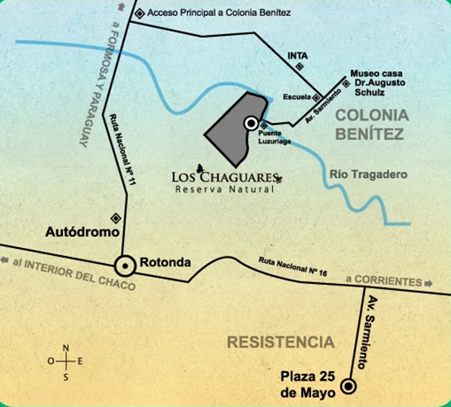

Visitar la Reserva
A solo 20 min de Resistencia ésta reserva natural ofrece un espacio para el ecoturismo, la conservación y la investigación, promoviendo una cultura basada en el respeto por la naturaleza.
Comprá tu entradaCómo llegar
Desde Resistencia continuar por Ruta Nacional N°11 hasta el acceso principal a Colonia Benitez y luego seguir 7km hasta la reserva
 Abrir en MAPS Descargar mapaHorarios
Lunes a viernes 9:00 AM - 5:00 PM
Sábado, domingo & feriados 9:00 AM - 4:30 PM